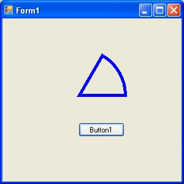

Visual Studio 2013 Lesson 29 : Creating Graphics- Polygon and Pie
[Lesson 28] << [Contents] >> [Lesson 30]
We have learned how to create the Graphics and the Pen objects to draw rectangle, ellipse ,circle and text in the preceding lessons, now we shall learn how to draw polygons and pie in Visual basic 2013 IDE.
29.1: Drawing Polygons
Polygon is a closed plane figure bounded by three or more straight sides. In order to draw a polygon on the screen, we need to define the coordinates of all the points (also known as vertices) that joined up to form the pollygon. The syntax to defines the points of a polygon with vertices A1,A2,A3,A4…….An is as follows;
Dim A2 As New Point(X2,Y2)
Dim A3 As New Point(X3,Y3)
Dim A4 As New Point(X4,Y4)
Dim An as New Point(Xn,Yn)
After declaring the points, we need to define a point
structure that group all the points together using the following syntax: Dim
myPoints As Point() = {A1, A2, A3,….,An} .Finally, create the graphics
object and use the DrawPolygon method to draw the polygon using the
following syntax:
Dim myGraphics As Graphics = Me.CreateGraphics
myGraphics.DrawPolygon(myPen, myPoints)
where myPen is the Pen object created using the
following syntax:
myPen = New Pen(Drawing.Color.Blue, 5)
Example 29.1 :Drawing a
Triangle
A triangle is a polygon with three vertices. Here is the code:
Private Sub BtnDraw_Click(sender As Object, e As EventArgs) Handles BtnDraw.Click
Dim myPen As Pen
Dim A As New Point(10, 10)
Dim B As New Point(100, 50)
Dim C As New Point(60, 150)
Dim myPoints As Point() = {A, B, C}
myPen = New Pen(Drawing.Color.Blue, 5)
Dim myGraphics As Graphics = Me.CreateGraphics
myGraphics.DrawPolygon(myPen, myPoints)
End Sub
Running the program produces the image as shown in Figure 29.1
Example 29.2: Drawing a
Quadrilateral
A quadrilateral is a polygon consists of four sides,so you need to define
four vertices. The code is as follows:
Private Sub BtnDraw_Click(sender As Object, e As EventArgs) Handles BtnDraw.Click
Dim myPen As Pen Dim A As New Point(10, 10)
Dim B As New Point(100, 50)
Dim C As New Point(120, 150)
Dim D As New Point(60, 200)
Dim myPoints As Point() = {A, B, C, D}
myPen = New Pen(Drawing.Color.Blue, 5)
Dim myGraphics As Graphics = Me.CreateGraphics
myGraphics.DrawPolygon(myPen, myPoints)
End Sub
The output image is as shown in Figure 29.2
Figure 29.2
29.2: Drawing a Pie
In order to draw a pie, you can use the DrawPie method of the graphics object. As usual, you need to create the Graphics and the Pen objects. The syntax for drawing a pie is:
myGraphics.DrawPie(myPen, X, Y, width,height, StartAngle, SweepAngle)
Where X and Y are the coordinates the bounding rectangle, other arguments are self-explanatory. Both StartAngle and SweepAngle are measured in degree. SweepAngle can take possible or negative values. If the value is positive, it sweep through clockwise direction while negative means it sweep through anticlockwise direction.
Example 29.3: Drawing a pie that starts with 0 degree and sweep clockwise through 60 degree.
Private Sub BtnDraw_Click(sender As Object, e As EventArgs) Handles BtnDraw.Click
Dim myPen As Pen myPen = New Pen(Drawing.Color.Blue,
5)
Dim myGraphics As Graphics = Me.CreateGraphics
myGraphics.DrawPie(myPen, 50,50, 150,150,0,60)
End Sub
The output image is as shown in Figure 29.3

Figure 29.3